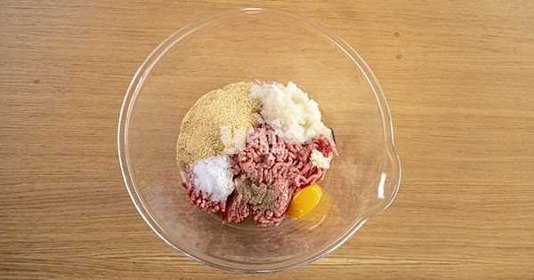
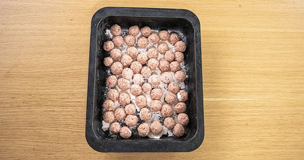
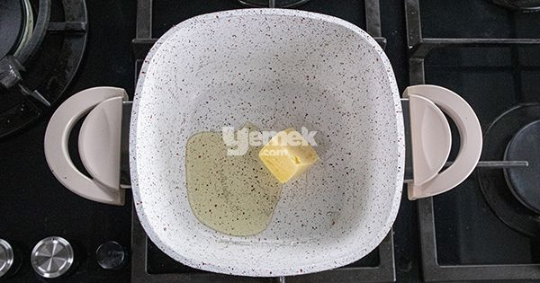
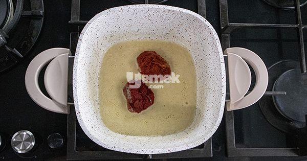
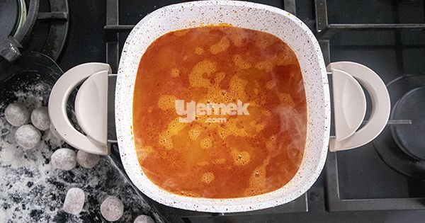
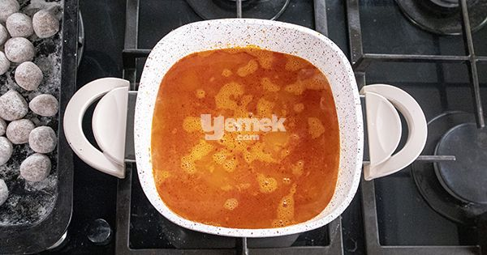

Turks made meatballs as the way you know it but sometimes we did it like this and it's delicious, here is the recipe for you.
For Cooking
Cooking Suggestions
The recipe for juicy meatballs; You can also prepare it with the addition of egg yolk and one lemon juice whisked with the egg yolk you add to the boiling water
instead of tomato paste sauce. You can add finely chopped basil or parsley to the meatball mortar, if desired. If you wish,
you can add flavor to its taste by adding potatoes and carrots.
How to Cook Turkish Meatball
In a deep bowl, knead with minced meat and other meatball ingredients.

Let it sit in the refrigerator for about 10 minutes so that it can be shaped easily.
Shape your meatballs into balls and lightly flour them.

Take butter in a saucepan, heat it slightly

Add the pepper paste and fry it well. Then add the water little by little.

Squeeze the lemon and add the black pepper. Let it boil.

Throw the meatballs you have shaped into the boiling water with tomato paste and cook until the meatballs are soft.

Then add optional salt and take it from the stove and serve hot.Bon appetit.